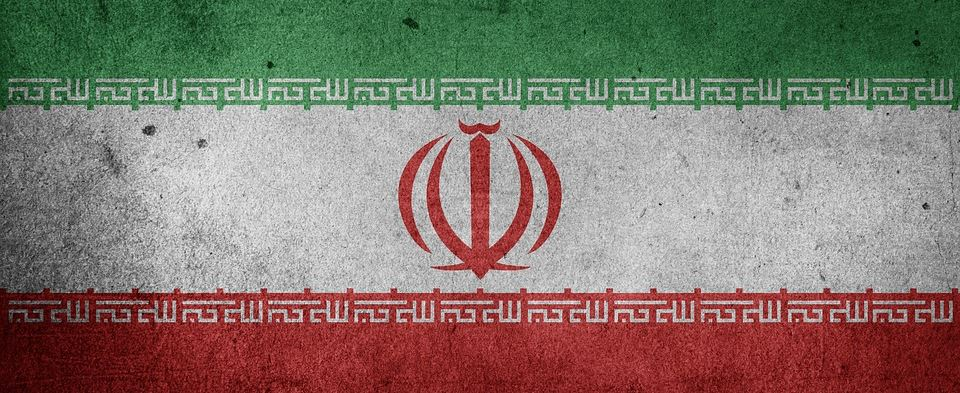

Copa Do Mundo Grupo B

Inglaterra
Inglaterra
A Seleção inglesa participará pela 13º vez da Copa do Mundo de futebol. A seleção de futebol masculino da Inglaterra é conhecida como The Three Lions (Os três leões). Apesar de ter fortes equipes a seleção inglesa foi campeã do mundo apenas em 1966 e jamais conquistou a Eurocopa.
Defensor da Inglaterra sobe o tom e dá aviso sobre duelo com Mbappé: 'Não vai me impedir de ganhar uma Copa'
Gales
Gales
O País de Gales competiu na Copa do Mundo apenas em 1958, antes da sua participação na edição de 2022. Na ocasião, a seleção chegou até as quartas de final.
A seleção galesa participou de sua segunda edição da Copa do Mundo de Futebol em 2022. Os Dragões, alcunha da seleção de futebol masculina do País de Gales, chearam até asQuartas-de-final da Copa de 1958, realizada na Suécia. Na Europa, a melho partipação do País de Gales foi em 2016, quando os Dragões chegaram até a semifinal, sendo derrotados pela Seleção Portuguesa, campeã desta edição da Eurocopa.
Irã
Irã
Em 8 de junho de 2005, o Irã foi junto com o Japão o primeiro país a se classificar para a Copa do Mundo de 2006, tornando essa a terceira aparição do Irã em Copas, causando comemorações em massa de iranianos em toda a parte.
Seleções que não pretendiam fazer protestos jogaram melhor na Copa, diz Wenger
Estados Undidos
Estados Unidos
Entre 1990 e 2014, a seleção masculina dos Estados Unidos participou de todos os mundiais. Antes, havia disputado apenas as copas de 1930, 1934 e 1950. E em 2018, ficou de fora da Copa do Mundo na Rússia ao não conseguir alcançar nem mesmo a repescagem das eliminatórias da Concacaf.
Estados Unidos seguram pressão, vencem Irã e avançam na Copa do Mundo